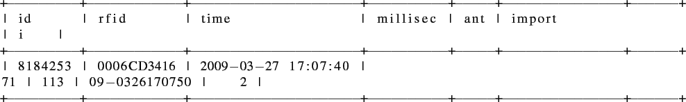

« Processed data | Contents | dir table »
data table
A perl script (see section ![[*]](file:/opt/local/share/lib/latex2html/icons/crossref.png) on page for details about the script) imports the data files written by the system in the shed into the |data| table.
on page for details about the script) imports the data files written by the system in the shed into the |data| table.
Shown next is a row of the |data| table followed by short explanation of the columns.

- The |id| value is an auto increment integer and therefore a unique identifier of a dataset in this table.
- The |rfid| column holds an RFID tag value. This value is a reference to a value in the |id| column of the |rfid| table (see paragraph on page ).
- The |time| and |millsec| columns harbor the time the dataset has been recorded. Unfortunately the MySQL |DATETIME| data type does not include the milliseconds. Hence, these values have to be stored in a seperate column.
- The |ant| column denotes the antenna the data was recorded at. This value is a reference to a value in the |id| column of the |ant| table (see paragraph on page ).
- The |import| value is a reference to a dataset in the |logs| table, simply unveils from which data file this dataset is part of.
- The |i| value is an indicator if the dataset could is used in a direction result (see ) and stay result (see ). Table on page gives an overview of the |i| values in the different tables.


Next: dir table
Up: Processed data
Previous: Processed data
Contents
rleuthold@access.ch